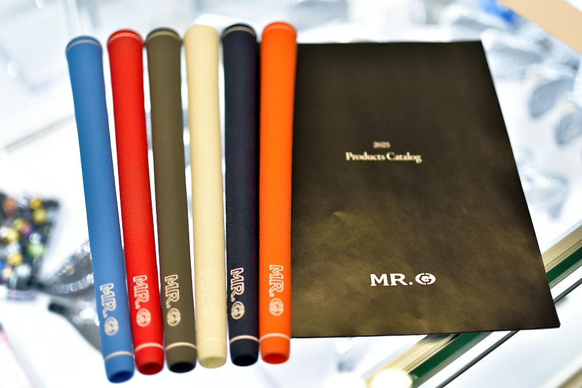
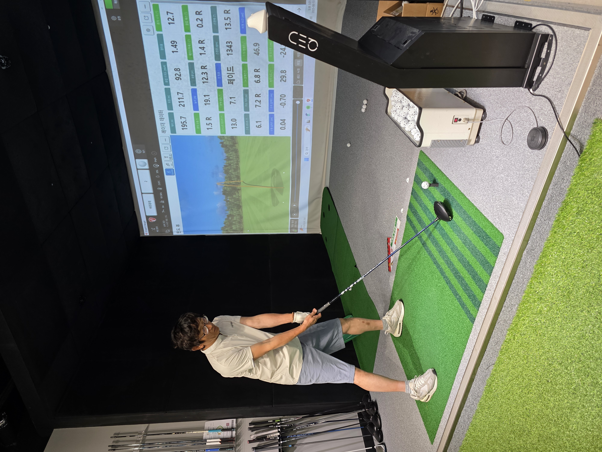
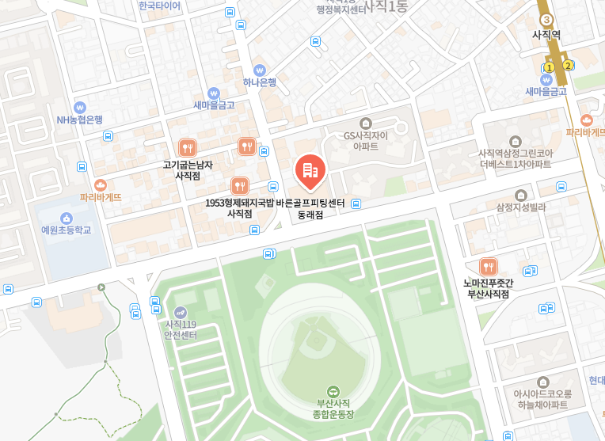

BUSAN SAJIK / PRECISION FITTING STUDIO
부산 동래 바른골프피팅센터
감이 아닌,
데이터로
입증합니다.
QED · FLIGHTSCOPE
스윙 분석부터 샤프트·헤드 최적 조합까지.
정밀한 데이터로 당신에게 맞는 클럽을 찾습니다.
평일 11:00–20:00 / 토·일 11:00–18:00
사직야구장 맞은편 · 지하 2~3층 무료주차 (삼정자이언츠파크)
OUR PHILOSOPHY
클럽을 바꾸기 전에,
당신을 먼저 이해합니다.
같은 클럽도 누구의 손에 쥐어지느냐에 따라 달라집니다.
BR GOLF는 QED·플라이트스코프로 볼스피드, 스핀량, 발사각을 분석하고,
당신의 움직임에 자연스럽게 맞는 조합을 찾아갑니다.
데이터 기반 분석QED · FlightScope 정밀 장비세밀한 밸런스 조정
FITTING PROGRAMS
당신의 골프에 맞는 선택.
지금의 고민에 맞는 피팅을 만나보세요.
CLUB CARE / GRIP & REPAIR
익숙한 클럽에도,
새로운 감각을.
지금 사용하는 클럽의 불편함부터 이야기해 주세요.

작업 가능 여부, 비용, 부품 재고와 소요 시간은 클럽 상태 확인 및 상담 후 안내합니다.
THE PROCESS
감각을 데이터로.
데이터를 확신으로.
충분히 듣고, 정밀하게 분석하고,
직접 경험하며 맞춰갑니다.
상담 & 클럽 체크
플레이 스타일과 고민, 현재 사용하는 클럽을 확인합니다.
스윙 데이터 분석
QED·플라이트스코프 데이터를 바탕으로 볼스피드, 발사각, 스핀과 샷 패턴을 분석합니다.
테스트 & 맞춤 피팅
헤드와 샤프트 조합을 비교하며 적합한 세팅을 찾습니다.
최종 세팅 & 피드백
완성된 클럽을 점검하고 사용 방향을 안내합니다.
INSIDE BR GOLF
당신의 골프를 위한 공간.
다양한 그립과 샤프트, 그리고 편안한 상담 공간.
BR GOLF의 매장을 둘러보세요.
QED
스윙을 숫자로 이해하다
볼스피드, 발사각, 스핀량 등 정량 데이터를 바탕으로 현재의 샷을 살펴봅니다.
FLIGHTSCOPE
조합을 비교하고 검증하다
론치모니터 데이터를 비교하며 스윙에 맞는 헤드와 샤프트 조합을 찾습니다.
ACCESS
사직야구장 맞은편
자이언츠파크 2층 210호. 지하 2~3층 무료 주차로 편하게 방문하세요.
편안하게 시작하는 피팅 상담
손끝의 감각까지, 다양한 그립
스윙에 맞는 조합을 찾아서
PRODUCT GUIDE
내 클럽을 이루는 세 가지 선택.
취급 제품과 재고, 주문 가능한 브랜드는 상담 시 확인해 주세요.

클럽
헤드 형태와 구성, 원하는 샷을 함께 살펴봅니다. 사진 속 이토보리 아이언은 제품 소개 글에서 자세히 볼 수 있습니다.
이토보리 제품 소개 ↗
샤프트
스윙 템포와 무게감, 기존 클럽의 사용감을 바탕으로 상담합니다. 정확한 모델과 사양은 재고 확인 후 안내합니다.
샤프트 문의 ↗그립
손에 맞는 두께와 질감, 선호하는 색상을 비교해 보세요. 그립 교체 가능 여부와 비용은 전화로 확인할 수 있습니다.
그립 교체 안내 ↗BR GOLF JOURNAL
나만의 컬러로 완성하는
이토보리 아이언 피팅
헤드와 그립의 다채로운 디테일, 그리고 여성 골퍼를 위한 피팅 체크 포인트를 소개합니다.
VISIT BR GOLF
부산 동래 바른골프피팅센터 오시는 길
- 주소
- 부산 동래구 사직북로 4, 자이언츠파크 2층 210호 (사직야구장 맞은편)
- 문의 전화
- 0507-1390-5980 ↗
- 주차 안내
- 지하 2층 · 지하 3층 무료 주차
- 영업시간
- 평일 11:00 ~ 20:00
토·일요일 11:00 ~ 18:00
100% 예약제 · 상시 상담
건물 2층 210호로 방문해 주세요.
피팅 상담과 방문 문의는 전화로 연락해 주세요.
부산 동래 바른골프피팅센터삼정자이언츠파크 2층 210호

이미지를 누르면 네이버 지도가 열립니다 ↗삼정자이언츠파크 · 2층 210호
약도 이미지를 눌러 네이버 지도에서 위치와 길찾기를 확인하세요.
BEFORE YOUR VISIT
피팅이 처음이라면.
방문 전에 궁금한 내용을 확인해 보세요.
초보자도 피팅 상담을 받을 수 있나요?
구력에 관계없이 현재 클럽이 불편한 점이나 클럽 선택 고민을 상담할 수 있습니다. 평소 연습할 때 느끼는 점을 편하게 말씀해 주세요.
방문할 때 무엇을 가져가면 좋나요?
현재 사용하는 클럽과 평소 착용하는 골프 장갑·골프화를 준비하면 상담에 도움이 됩니다. 전체 세트를 가져와야 하는지는 전화로 먼저 확인해 주세요.
피팅 비용과 시간은 얼마나 걸리나요?
희망 프로그램, 점검 범위 및 작업 내용에 따라 달라집니다. 방문 전 전화로 상담해 주세요. 확인되지 않은 일괄 가격이나 소요 시간을 안내하지 않습니다.
그립 교체와 수리는 바로 가능한가요?
부품 재고와 클럽 상태, 당일 작업 일정에 따라 달라집니다. 필요한 작업과 클럽 모델을 알려주시면 가능 여부를 확인해 드립니다.
주차와 방문 예약은 어떻게 하나요?
삼정자이언츠파크 지하 2층·3층 무료 주차를 이용할 수 있습니다. 매장은 2층 210호이며, 방문 일정은 0507-1390-5980으로 문의해 주세요.
NEWS
소식
홈페이지 메뉴 개편 안내 2026.10.30
센터 소개, 피팅 안내, 제품 안내, 피팅 사례, 예약·상담, 소식의 여섯 메뉴에서 필요한 정보를 찾아볼 수 있습니다.
진행 중인 이벤트는 등록되어 있지 않습니다.
센터 이야기 보기 ↗CONTACT & RESERVATION
다음 라운드의 변화,
정밀한 분석에서 시작하세요.
시타부터 맞춤 클럽 제작까지, 당신의 고민을 함께 살펴봅니다.